図解：ユーゲントシュティール
ユーゲントシュティールの成立と展開
- 19世紀後半
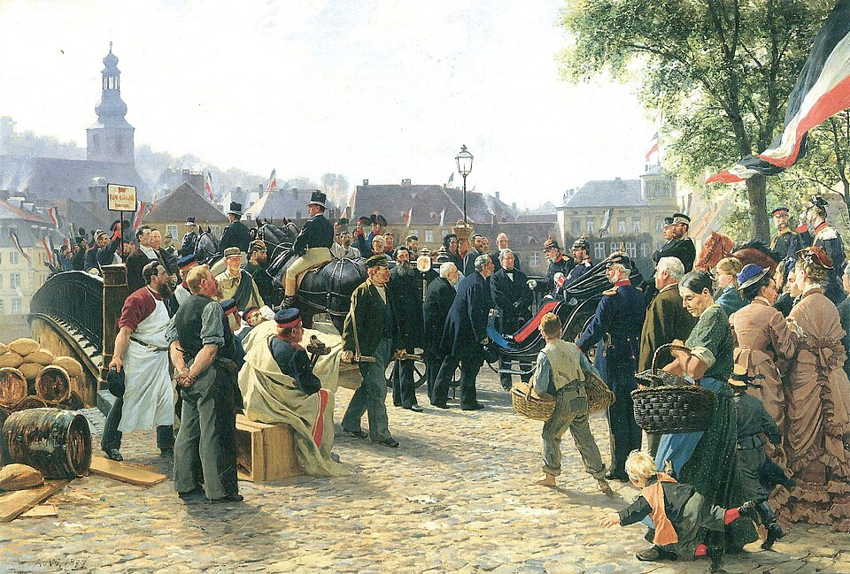
歴史主義の美術国家の歴史を描く
若い世代が反発 - 1892〜93
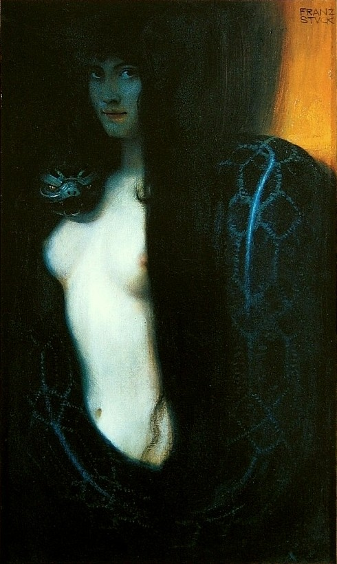
ミュンヘン分離派96人が協会を脱退
第1回展が大盛況 - 1896
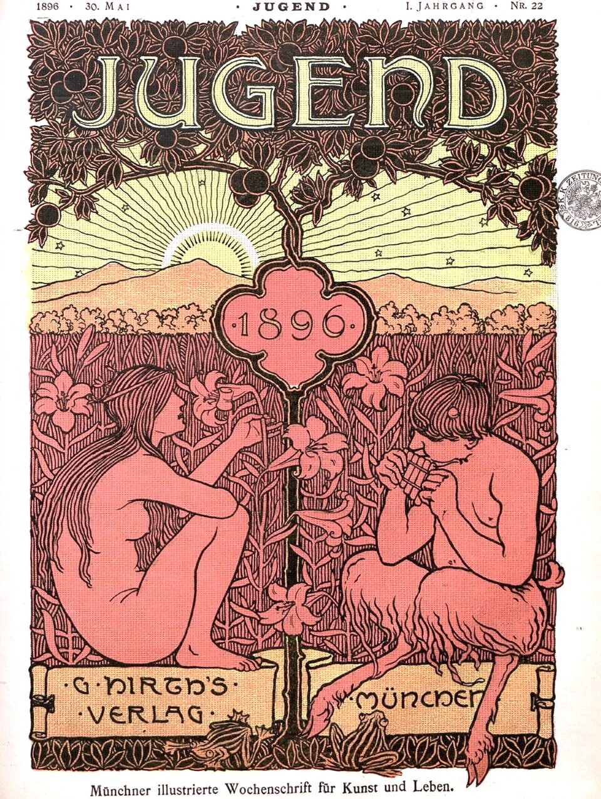
『ユーゲント』創刊ヒルトの手頃な雑誌
様式名の由来 - 1896〜
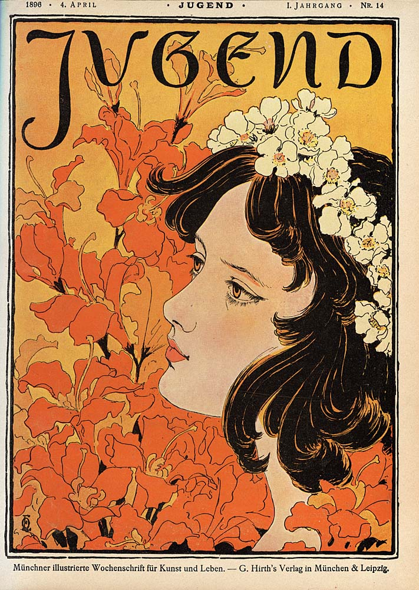
エックマンの表紙絵と文字を一体に
曲線的な書体 - 19世紀末〜
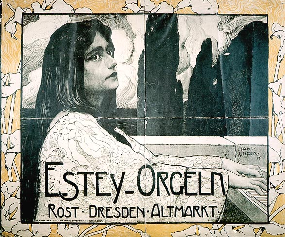
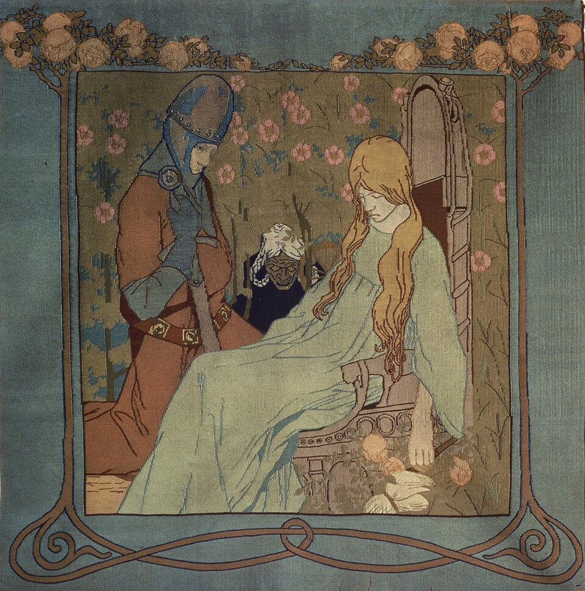
生活全体へ広がるポスター・工芸・家具
後に合理性へ移る
それまでと何が違うか
植物などの曲線展示壁一面に敷き詰める目線に合わせ間隔を空ける
ミュンヘン分離派展雑誌高価な美術雑誌手頃な『ユーゲント』
芸術の民主化文字絵と文字は別の人同じ人が文字まで
表紙全体が一つの作品
図版の出典
- 《国王ヴィルヘルム1世のザールブリュッケン到着、1870年8月9日》アントン・フォン・ヴェルナー：出典（Public domain / PD-Art / PDM）
- 《罪（1893年、ノイエ・ピナコテーク版）》フランツ・フォン・シュトゥック：出典（Public domain / PD-Art / PDM）
- 《『ユーゲント』1896年第22号表紙》ハンス・プファフ：出典（Public domain / PD-Art / PDM）
- 《『ユーゲント』1896年第14号表紙》オットー・エックマン：出典（Public domain / PD-Art / PDM）
- 《エステー・オルガン広告》ハンス・ウンガー：出典（Public domain / PD-Art / PDM）
- 《眠れる森の美女のタペストリー》ハインリヒ・フォーゲラー（意匠）：出典（Public domain / PD-Art / PDM）
重要人物
分離派の芸術家
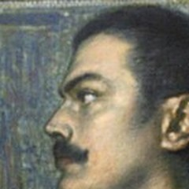
フランツ・フォン・シュトゥック画家象徴主義の中心人物。《罪》を出品し表紙も描く- フリッツ・フォン・ウーデ画家印象主義的な画風で分離派の中心となる
- ブルーノ・ピグルハインアカデミー教授ミュンヘン分離派の初代会長に選ばれる
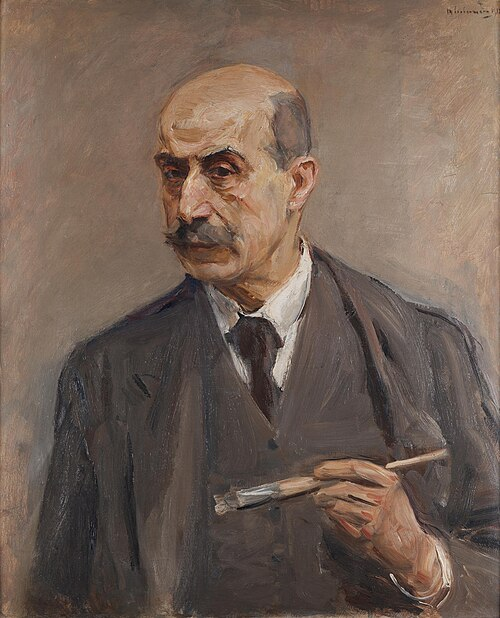
マックス・リーバーマン画家印象主義をもたらし、後にベルリン分離派を創設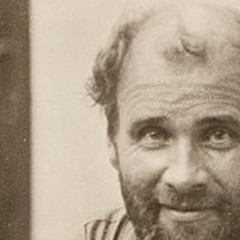
グスタフ・クリムト画家ウィーン分離派の創始者。代表的な画家の一人
雑誌をつくった人
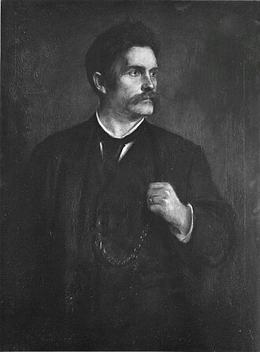
ゲオルク・ヒルト作家・出版分離派を支え、1896年に『ユーゲント』を創刊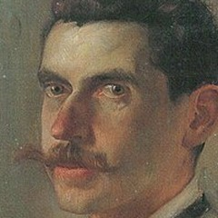
オットー・エックマンイラストレーター絵・文字・装飾を融合し、曲線的な書体を作る
合理的なデザインへ
時代の背景
新しい様式とその名称
ドイツ語圏の新しい芸術
動画 0:57～ユーゲントシュティールは、19世紀末のドイツ語圏で展開された芸術潮流です。ドイツ版アール・ヌーヴォーとして知られ、その後の近代デザインへの橋渡しとなりました。アール・ヌーヴォーは、アーツ・アンド・クラフツの影響を受け、建築・工芸・デザインなど生活全体の芸術化を目指した運動です。手作りの精神を受け継ぎつつ、新素材や分業など効率的な方法を使い、大量生産と品質の両立を図りました。自然に着想を得た、植物をモチーフとする曲線的なデザインも特徴です。

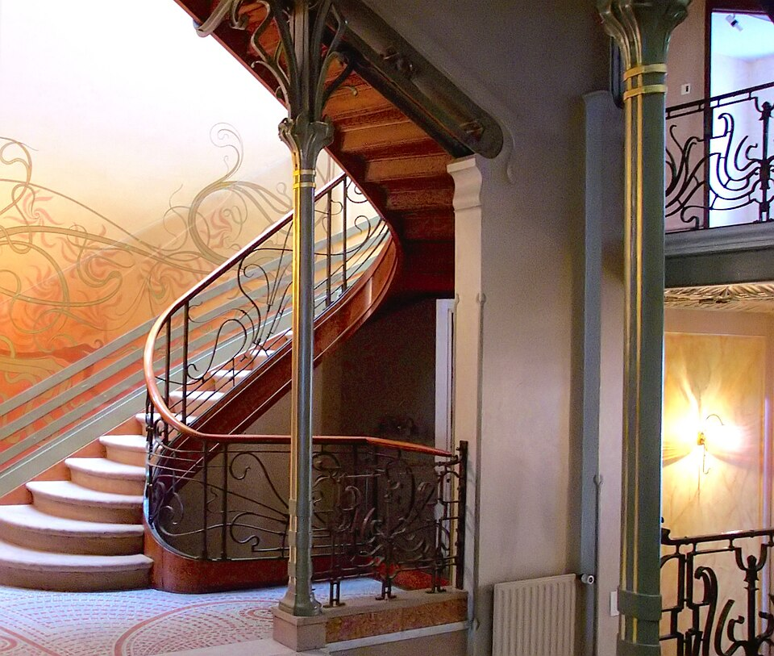
画像を拡大 ＋《タッセル邸の階段室》
- 作者
- ヴィクトール・オルタ（建築）、Henry Townsend（写真）
- 制作時期
- 1892～1893年
- 所在地・所蔵
- ブリュッセル
- 素材・形式
- 建築
- 原題
- Hôtel Tassel
- 動画の年代
- 1894年
出典・画像について
Henry TownsendがPD-selfで提供した写真。動画の年代表記：1894年。確認した作品年代と区別。
画像出典：Henry Townsend
Public domain（Henry Townsend、PD-self）
作品情報：作品・画像・利用条件
既存030で個体と写真条件が未確定。同型別個体や別の茸ランプで代用せず、無理な再探索は行わない。
《ひとよ茸ランプ》
- 作者
- エミール・ガレ
- 制作時期
- 1902年頃
- 所在地・所蔵
- 掲載写真の個体・所蔵先未確定
- 素材・形式
- ガラス工芸
出典・画像について
 画像を拡大 ＋
画像を拡大 ＋
《ジスモンダ》
- 作者
- アルフォンス・ミュシャ
- 制作時期
- 1894年
- 所在地・所蔵
- 個人蔵（Commons掲載個体）
- 素材・形式
- カラーリトグラフ・ポスター
- 原題
- Gismonda
出典・画像について
画像出典：Art Renewal Center / Wikimedia Commons
Public domain / PD-Art / PDM
作品情報：作品・画像・利用条件
制作メモ
既存画像は幅330pxの低解像度。
イギリスのアーツ・アンド・クラフツから発展したアール・ヌーヴォーは、フランスやベルギーを中心にヨーロッパへ広まりました。イタリアのスティーレ・リバティ、イギリスのモダン・スタイル、アメリカのティファニー・スタイル、スペインのモデルニスモなど、各地で違う名称と特色を持ちます。ドイツでの呼び名が、ユーゲントシュティールです。シュティールは英語のスタイルに当たります。
雑誌と分離派との関係
動画 2:05～名称の起源は、1896年に創刊された雑誌『ユーゲント』です。ドイツで爆発的に売れ、芸術家やデザイナーへ大きな影響を与えました。美術史上、分離派、セセッションとの関係も重要です。この雑誌はミュンヘン分離派を中心に創刊され、ウィーンでも様式は独自の発展を遂げました。ウィーン分離派の創始者グスタフ・クリムトも、代表的な画家に数えられます。ここではウィーン分離派の詳細へ踏み込まず、ドイツでの展開を見ます。背景となるのは、保守的なアカデミーの支配と急速な工業化への反発でした。

《『ユーゲント』1896年第22号表紙》
- 作者
- ハンス・プファフ
- 制作時期
- 1896年5月30日
- 所在地・所蔵
- ハイデルベルク大学図書館（デジタル画像出典）
- 素材・形式
- 雑誌表紙・印刷図版
- 原題
- Jugend, I. Jahrgang, Nr. 22, 30. Mai 1896
- 動画の年代
- 1896年
出典・画像について
動画画面の作者はハンス・クリスチャンセン。画像記録と原作品書誌ではハンス・プファフとされるため、作品情報は後者を採用。動画の年代表記：1896年。確認した作品年代と区別。
画像出典：Hans Pfaff (1875-1914 or later)
Public domain / PD-Art / PDM
作品情報：作品・画像・利用条件

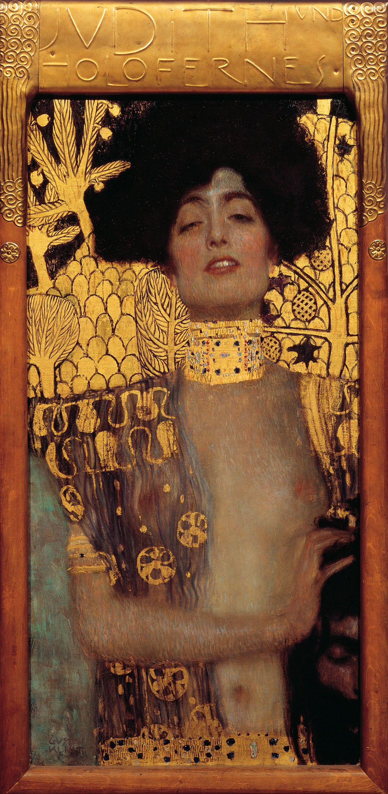
画像を拡大 ＋《ユディトI（ホロフェルネスの首を持つユディト）》
- 作者
- グスタフ・クリムト
- 制作時期
- 1901年
- 所在地・所蔵
- ベルヴェデーレ美術館、ウィーン
- 素材・形式
- 絵画
- 原題
- Judith I
出典・画像について
統一国家ができるまで
統一を望む声とウィーン体制
動画 3:21～19世紀初頭、ナポレオン率いるフランス軍の侵略は、ドイツの大きな転機となりました。諸国の緩やかな結び付きだった神聖ローマ帝国が崩壊する一方、諸国が協力してフランス軍を撃退した経験は、人々の自信になりました。一つの国にまとまれば列強にも劣らないのではないかと、統一を望む声も生まれます。
しかし、戦後のウィーン会議では、オーストリア外相メッテルニヒを中心に、諸国はオーストリアを盟主とするドイツ連邦へ再編されました。統一すると一国が強大になりすぎるという、列強の勢力均衡が重視されたのです。このウィーン体制は1848年の各地の革命で大きく揺らぎました。フランスでは二月革命で王政が倒れ、ドイツやオーストリアの三月革命ではメッテルニヒが辞職します。ただし三月革命は最終的に失敗し、連邦は小国に分かれた枠組みのまま維持されました。
関税同盟とプロイセンの経済力
動画 4:35～ウィーン体制の中で動いていたのが、北部のベルリンを首都とするプロイセンです。オーストリアに匹敵する大国であり、1834年に発足するドイツ関税同盟を主導しました。諸国では関税も、場合によっては通貨も違い、国境を越すたびに関税を払うため物流が滞っていました。1828年にプロイセンとヘッセンの間で発足した関税同盟を端緒に、同盟内の関税を統一して経済を発展させようとする動きが広がりました。
オーストリアは、高い関税で収益を得ていたことや、経済面でプロイセンの影響下に入るのを嫌ったことなどから加わりませんでした。結果として両国に経済格差が生じ、政治はオーストリア、経済はプロイセンが主導するようになります。従来は高い関税で販売先が限られたルール地方の工業製品も、広い経済圏で売れるようになり、鉄鋼・石炭産業が急速に発展しました。
経済の主導権から軍事的統一へ
動画 6:13～プロイセンは経済力を背景に政治的影響力も高め、特に北ドイツへの支配を強めました。反抗して同盟から外されれば経済が停滞しかねないため、関税同盟は支配装置として働く面もありました。一方、オーストリアは1853年からのクリミア戦争をめぐる外交や、1859年のイタリア統一戦争での失敗によって影響力を低下させます。
クリミア戦争について
原解説にはオーストリアがクリミア戦争へ「参戦」とありますが、同国は中立を宣言しました。本文では戦争をめぐる外交上の位置付けとして表現し、1859年の戦争とは区別しました。
「鉄血政策」で知られるプロイセン首相ビスマルクは、保守的でありながら現実主義者でもありました。各地のナショナリズムから統一は避けられないと考え、プロイセンの国益に基づく統一を軍事力で進めます。1864年のデンマーク戦争に勝ち、1866年の普墺戦争ではオーストリアを破って、ドイツ統一から排除しました。北ドイツの統一後は、フランスを挑発して普仏戦争を起こし、共通の敵を通じて南ドイツも結束させます。戦争に勝利した南北ドイツは統合され、プロイセンを母体とするドイツ帝国が成立しました。宰相となったビスマルクが、強い指導力で政治を主導します。
歴史主義と生活改革
国家の歴史を描く美術
動画 7:59～19世紀中頃のドイツ、とりわけプロイセンでは、ナショナリズムとともに歴史主義が強く意識されました。国の歴史を視覚化し、国民の帰属意識を高めるためです。技法偏重で精神性を軽んじるアカデミーに反発したナザレ派も、ローマから帰国すると教授などになり、体制側へ取り込まれました。皇帝を名乗るナポレオンへの反発から、過去の神聖ローマ皇帝を描いた点でも、彼らの精神性重視と歴史主義は愛国心の面で結び付きやすかったのです。
 画像を拡大 ＋
画像を拡大 ＋
《ハプスブルク王ルドルフ1世のバーゼル入城、1273年》
- 作者
- フランツ・プフォル
- 制作時期
- 1808～1810年
- 所在地・所蔵
- シュテーデル美術館（HM51）、フランクフルト歴史博物館から長期寄託
- 素材・形式
- 油彩・カンヴァス
- 原題
- The Entry of King Rudolf of Habsburg into Basel in 1273
- 動画の年代
- 1809～1810年
出典・画像について
館由来PNGはPDM-owner。動画の年代表記：1809～1810年。確認した作品年代と区別。
画像出典：Franz Pforr
Public Domain Mark 1.0（館提供、PDM-owner）
作品情報：作品・画像・利用条件 · 所蔵館の作品ページ
制作メモ
構造化データにCC BY-SA4.0も表示されるため原メタデータを保持。
統一国家としての歴史が浅いドイツ帝国は、国内外に国家の正当性を示そうと、歴史主義をさらに推進しました。皇帝に好まれた宮廷画家アントン・フォン・ヴェルナーは、その代表です。しかし、保守的な美術教育には、若い世代を中心とする反発が生まれました。

《国王ヴィルヘルム1世のザールブリュッケン到着、1870年8月9日》
- 作者
- アントン・フォン・ヴェルナー
- 制作時期
- 1877年
- 所在地・所蔵
- ドイツ歴史博物館、ベルリン（1987/304）
- 素材・形式
- 油彩・カンヴァス（壁画のための色彩習作）
- 原題
- Ankunft König Wilhelms I. in Saarbrücken am 9. August 1870
出典・画像について
生活改革運動とビスマルクの退陣
動画 9:27～南北統一で物資や人の往来が容易になり、工業はさらに発展しました。一方、地方の農民も都市への出稼ぎや農業の効率化に追われます。労働環境は十分に整わず、健康被害や社会的不満も生じました。こうした中で現れたのが、レーベンスレフォルム、生活改革運動です。不衛生な環境や抑圧的な市民道徳を否定し、自然の中で生きることを勧めました。菜食主義、自然療法、裸体主義などが具体的な実践です。自然や伝統的生活への回帰と、保守的な歴史主義への反発が、自然をモチーフとする新しい様式につながりました。
1890年、プロイセン時代から約30年政治を主導したビスマルクが辞任します。若い皇帝ヴィルヘルム2世との意見の対立による、事実上の罷免ともいわれます。統一から約20年で人口が増える中、老練なビスマルクでは若い世代の動きを抑えられないと判断された、という説明もあります。
ビスマルクは社会主義を嫌い、社会主義者鎮圧法を定める一方、医療保険法や災害保険法など労働者保護を整え、外交も安定させました。不安定な統一直後の国家の基盤を築く政策は、「飴と鞭」にたとえられます。ヴィルヘルム2世は社会主義者鎮圧法を廃し、労働者に歩み寄る姿勢を示しました。再延長の議会承認が得られなかったことに加え、弾圧より懐柔で従わせるイメージを演出したい側面もあり、1890年の社会民主党の躍進を見て弾圧では難しいと考えたのでしょう。しかし労働運動はむしろ増え、再び弾圧を図るなど一貫しませんでした。
ミュンヘン分離派の挑戦
ミュンヘン分離派の設立
動画 11:59～1892年のミュンヘン分離派は、政治や労働運動との直接の関係はありませんが、ビスマルク退陣後の改革の流れを受けたものとも考えられます。アカデミーへの反発は、ウィーンやベルリンに先立ってミュンヘンで起こりました。1891年、バイエルン摂政ルイトポルト王子の70歳を祝う摂政ルイトポルト財団が設立されます。伝統的な歴史主義の芸術家を支援し、印象主義や象徴主義を保護の対象としない姿勢が、若い芸術家の不満を招きました。なお、現在の同財団に同じ保守的傾向があるという意味ではありません。
1892年、ミュンヘン美術アカデミー教授ブルーノ・ピグルハインを初代会長に選び、96人がミュンヘン芸術家協会を脱退しました。体制の内部にも、そのあり方を疑う人々がいたのです。中心となったのは、象徴主義のフランツ・フォン・シュトゥックや、印象主義的なフリッツ・フォン・ウーデでした。後にベルリン分離派を創設するマックス・リーバーマンも関わり、ミュンヘンの成功に刺激されてベルリンでも設立を進めます。

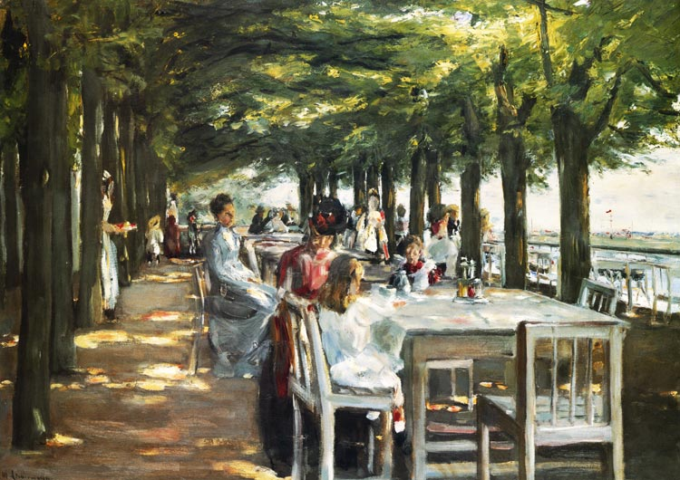
画像を拡大 ＋《ニーンステッテンのホテル・ヤコプのテラス》
- 作者
- マックス・リーバーマン
- 制作時期
- 1902年
- 所在地・所蔵
- ハンブルク美術館（HK-1597）
- 素材・形式
- 油彩・カンヴァス
- 原題
- Die Terrasse des Hotel Louis C. Jacob in Nienstedten an der Elbe
出典・画像について
作品を尊重する展覧会
動画 13:37～1893年、第1回ミュンヘン分離派展が開かれました。従来の公的展覧会では歴史画など特定の様式が優先され、壁一面に絵を敷き詰める展示の中で、アカデミーの意向に沿う作品が見やすい位置を得るなど、扱いに差がありました。分離派展は、すべての作品を鑑賞者の目線に合わせ、作品同士の間隔も空けました。現在では一般的な方法ですが、すべての作品を尊重した点で画期的でした。

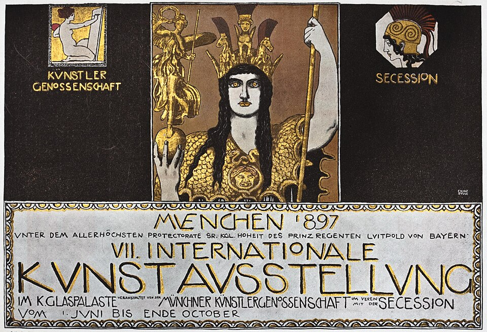
画像を拡大 ＋《第7回ミュンヘン国際美術展ポスター（1897年、雑誌掲載図版）》
- 作者
- フランツ・フォン・シュトゥック
- 制作時期
- 1897年（意匠）／1898年（掲載資料）
- 所在地・所蔵
- 原ポスター所蔵先未確定。掲載資料：Westermanns Monatshefte、1898年
- 素材・形式
- ポスターの雑誌掲載図版
- 原題
- VII. Internationale Kunstausstellung München 1897
- 動画の年代
- 1897年
出典・画像について
原ポスターの写真ではなく雑誌掲載図版。動画の年代表記：1897年。確認した作品年代と区別。本文の1893年第1回展とは異なる、1897年の展覧会のポスター。
画像出典：Franz von Stuck (1863-1928)
Public domain / PD-Art / PDM
作品情報：作品・画像・利用条件
シュトゥックの《罪》などを展示した展覧会は、大盛況となりました。国家の望む美術と、新興ブルジョワの望む美術に隔たりがあったともいえます。工業の発展で台頭した市民階級は、リーバーマンらが1880年代にもたらした印象主義を先に評価していました。大きな展覧会の成功により、国が評価しない作品も市民階級には支持されていることが明らかになったのです。

《罪（1893年、ノイエ・ピナコテーク版）》
- 作者
- フランツ・フォン・シュトゥック
- 制作時期
- 1893年
- 所在地・所蔵
- ノイエ・ピナコテーク／バイエルン州立絵画コレクション（7925）
- 素材・形式
- 油彩・カンヴァス
- 原題
- Die Sünde
出典・画像について
額縁を省いた画面図版。
画像出典：Franz von Stuck
Public domain / PD-Art / PDM
作品情報：作品・画像・利用条件
制作メモ
配信490×820px。
Commonsに色調修正履歴があるが親による追加加工はない。
雑誌を通じて芸術を広める
手に取りやすい雑誌『ユーゲント』
動画 14:58～作家で分離派の支援者だったゲオルク・ヒルトは、展覧会の成功だけでは満足しませんでした。「セセッション」という言葉を作り、主要なパトロンの一人として分離派の経済的自立を支えた人物です。展覧会だけでは、足を運ぶ人しか新しい芸術に触れられず、その精神を大衆へ広め、社会を根本から変えるには限界があると考えました。そこで1896年、自ら設立したゲオルク・ヒルト・クンストフェアラークから、雑誌『ユーゲント』を創刊します。
ドイツでは既に『パン』などの美術雑誌がありましたが、高価で販売も限られ、一部の層しか買えませんでした。『ユーゲント』は極力費用を抑えて手頃な価格を実現します。安くても新聞のように読んで捨てるだけではない芸術性があり、よく売れました。ヒルトはミュンヘン分離派の芸術家や新進のイラストレーターを雇い、普及を図ります。シュトゥックらも表紙を描きました。
動画1896年表示と刊行例に相違。同一刊号・現物と自由画像条件を確定できず保留。別年表紙で代用しない。
《『ユーゲント』表紙・踊る二人の女性（刊号未確定）》
- 作者
- フランツ・フォン・シュトゥック
- 制作時期
- 不明（同図案の1898年第40号掲載例あり）
- 所在地・所蔵
- 動画に使用された刊号・所蔵個体未確定
- 素材・形式
- 雑誌表紙のカラー印刷
- 原題
- Jugend
- 動画の年代
- 1896年
出典・画像について
動画の年代表記：1896年。確認した作品年代と区別。
作品情報：作品・画像・利用条件 · 所蔵館の作品ページ
年齢ではない「青春」と自然のモチーフ
動画 16:36～ユーゲントとは青春を意味します。創刊号が示した青春は、生きる喜び、物事を味わう力、希望、愛、人間への信頼でした。それは30歳や35歳までの人だけの特権ではありません。若い人が失っていることも、最も年長の人が持っていることもあります。都会育ちで4歳にして若さを失う子がいる一方、80歳でも人生を最後の一滴まで味わおうとする人は、心に青春を抱き続けている、という趣旨です。若者専用の雑誌という意味ではなく、年老いても純粋に楽しめれば青春があり、若くても楽しむ心を失えば青春を失うという考えでした。急速な都市化で失われた人々の青春を、ヒルトは取り戻そうとしたのです。
ヒルトは過去の様式からの脱却を掲げましたが、特定の様式へ偏ることをよしとはしていませんでした。それでも工業化への反発や過去からの脱却は、自然のモチーフと曲線的な様式へ向かい、西洋各地のアール・ヌーヴォーとも結び付きます。レーベンスレフォルムとの関係も強く、都市化へ反発する文化を表す挿絵が雑誌に描かれました。その部分を取り出してユーゲントシュティールと呼んだ、と考えることもできそうです。
文字・暮らし・近代デザインへ
絵・文字・装飾を一つにする
動画 18:35～イラストレーターの中で、特に注目されるのがオットー・エックマンです。絵と文字、装飾を一つの芸術へ融合したことは、『ユーゲント』の功績の一つでした。当時は絵と文字を別の人が作る分業が強く残っていましたが、同じイラストレーターが文字までデザインすることで、表紙全体が一つの作品として成立します。

《『ユーゲント』1896年第14号表紙》
- 作者
- オットー・エックマン
- 制作時期
- 1896年4月4日
- 所在地・所蔵
- フィンランド国立図書館由来の画像（Commons出典記録）
- 素材・形式
- リトグラフ
- 原題
- Jugend, Nr. 14/1896
- 動画の年代
- 1896年
出典・画像について
動画の年代表記：1896年。確認した作品年代と区別。
画像出典：Otto Eckmann (1865-1902) (signature E O (monogram) at bottom left)
Public domain / PD-Art / PDM
作品情報：作品・画像・利用条件
エックマン書体は、日本の書道の影響も受け、従来の硬い書体にはない曲線的な形を作りました。文字そのものを芸術作品とする考えは、当時は画期的でした。現在はデザイン書体も珍しくなく、エックマン書体を使うこともできます。
動画と同じ復刻字形か原書体の見本か未確定。見本画像のCCをフォントソフトウェアの条件と混同せず保留。
《エックマン書体（動画使用のデジタル復刻は未確定）》
- 作者
- オットー・エックマン（書体意匠）。候補見本作成：Cuprum
- 制作時期
- 2019年6月4日（候補デジタル見本）
- 所在地・所蔵
- デジタル資料。動画で使う復刻フォント・配布元未確定
- 素材・形式
- デジタル書体見本
- 原題
- Eckmann Typeface
出典・画像について
作品情報：作品・画像・利用条件
風刺・工芸から合理的なデザインへ
動画 19:27～『ユーゲント』は芸術性だけでなく、毒のある社会風刺や体制へ批判的な編集姿勢でも反響を呼びました。週刊で届き、息苦しい日常の不満を受け止める存在として支持されます。海外のアール・ヌーヴォーの流行もあり、雑誌だけでなくポスターにも、有機的な曲線や装飾書体が盛んに使われました。オルガンの広告の枠を花で飾る表現にも、それが見られます。有機的モチーフや曲線は工芸品・家具へも広がり、生活全体を芸術にする点で他国のアール・ヌーヴォーと共通しました。

《エステー・オルガン広告》
- 作者
- ハンス・ウンガー
- 制作時期
- 1896年
- 所在地・所蔵
- 同作品所蔵例：ハンブルク美術工芸博物館（EP1986.102）。Commons画像の特定所蔵個体未記載
- 素材・形式
- 紙にリトグラフ（2部構成）
- 原題
- Estey-Orgeln. Rost Dresden Altmarkt
出典・画像について

《眠れる森の美女のタペストリー》
- 作者
- ハインリヒ・フォーゲラー（意匠）
- 制作時期
- 1898年
- 所在地・所蔵
- ケルン応用美術館（N1396）
- 素材・形式
- タペストリー
- 原題
- Wandteppich Dornröschen
出典・画像について
同型個体はあるが動画写真の個体と自由利用条件未確定。公式写真©RMN/Hervé Lewandowski。別館の同型写真を同一物として代用しない。
《肘掛け椅子》
- 作者
- ペーター・ベーレンス（意匠）、J・D・ハイマン（製作）
- 制作時期
- 1901年
- 所在地・所蔵
- 同型所蔵例：オルセー美術館（OAO1370 2）。動画画像の個体未確定
- 素材・形式
- 白ラッカー仕上げのポプラ材、赤い革の張り地
- 原題
- Fauteuil
- 動画の年代
- 1900～1901年
出典・画像について
動画の年代表記：1900～1901年。確認した作品年代と区別。
作品情報：作品・画像・利用条件 · 所蔵館の作品ページ
後にドイツ工作連盟に関わるペーター・ベーレンスやリヒャルト・リーマーシュミットも、もとはこの様式の主要人物でした。やがて過剰な装飾性が批判され、機能性や合理性を重んじるモダン・デザインへ移ります。彼らも装飾より合理性を選びました。アーツ・アンド・クラフツ、アール・ヌーヴォーの流れを知ることは、後のバウハウスやアール・デコを読む上でも重要です。
雑誌の変容と芸術の民主化
動画 20:45～1916年、第一次世界大戦の最中にヒルトが亡くなりました。雑誌も時代の流れに抗えず、その後のナチス時代も含め、プロパガンダに利用されました。それでも、ヒルトの掲げた芸術の民主化は、芸術を一部の特権階級から社会全体へ開くものへ変え、大きな功績を残しました。この様式を最も洗練させたのは、ドイツ統一から外れたオーストリアで起こった、グスタフ・クリムトらを擁するウィーン分離派でした。
同じ刊号・図像・作者と掲載可能画像を確定できず保留。Heidelberg1916年上巻 https://digi.ub.uni-heidelberg.de/diglit/jugend1916_1 はAnubis Access Denied。1914/1915の別表紙を代用せず、人物を推測で特定しない。
《『ユーゲント』1916年第9号表紙》
- 作者
- 作者未確定
- 制作時期
- 1916年（刊行年）
- 所在地・所蔵
- 画面資料の所蔵先未確定
- 素材・形式
- 雑誌表紙
- 原題
- Jugend, 1916, Nr. 9
出典・画像について
同じ刊号・図像・作者と掲載可能画像を確定できず保留。Heidelberg1916年上巻 https://digi.ub.uni-heidelberg.de/diglit/jugend1916_1 はAnubis Access Denied。1914/1915の別表紙を代用せず、人物を推測で特定しない。
《『ユーゲント』1916年第16号表紙》
- 作者
- 作者未確定
- 制作時期
- 1916年（刊行年）
- 所在地・所蔵
- 画面資料の所蔵先未確定
- 素材・形式
- 雑誌表紙
- 原題
- Jugend, 1916, Nr. 16
出典・画像について
同じ刊号・図像・作者と掲載可能画像を確定できず保留。Heidelberg1916年上巻 https://digi.ub.uni-heidelberg.de/diglit/jugend1916_1 はAnubis Access Denied。1914/1915の別表紙を代用せず、人物を推測で特定しない。
《『ユーゲント』1916年第1号表紙》
- 作者
- 作者未確定
- 制作時期
- 1916年（刊行年）
- 所在地・所蔵
- 画面資料の所蔵先未確定
- 素材・形式
- 雑誌表紙
- 原題
- Jugend, 1916, Nr. 1
出典・画像について
要点まとめ
- ユーゲントシュティールはドイツ語圏のアール・ヌーヴォーで、1896年創刊の雑誌ユーゲントが名称の起源となった。
- ドイツ統一を進めた国家は歴史主義の美術を重視したが、保守的な教育には若い芸術家の反発が生まれた。
- 急速な工業化への不満は自然や生活の改革を求める動きにもつながり、植物的モチーフや曲線の背景となった。
- 1892年のミュンヘン分離派は、内部の教授も含む芸術家が従来の体制を離れて設立し、新しい展示方法を試みた。
- 1893年展の成功は、国家と新興市民階級の美術の評価に違いがあることを示した。
- ヒルトは安価で芸術性のある雑誌を通じ、展覧会へ来ない人々にも新しい芸術を広めようとした。
- エックマンらは絵・文字・装飾を一つにまとめ、様式はポスター・工芸・家具へ広がった。
- やがて装飾の過剰さへの批判から合理性・機能性を重視するデザインへ移るが、芸術を社会へ開くという役割は大きかった。
確認問題
答えを考えてから開いてください。選択問題は選ぶとすぐ正誤と解説が出ます（選択肢の順番は開くたびに変わります）。各問題のリンクから該当の章や作品カードへ戻れます。
選択問題：0／4問回答・正解0
A. 一問一答答えを考えてから開く
問1ユーゲントシュティールという名称の起源となった雑誌は何か。
答えを見る
問2ミュンヘン分離派が結成された年はいつか。
答えを見る
問3ヒルトがいう「青春」は、若い年齢だけで決まるものか。
答えを見る
B. 4択選ぶとすぐ正誤と解説
問4関税同盟が物流を促す理由として、本文に合うものはどれか。
→ 本文で確認（関税同盟とプロイセンの経済力）
問5分離派展の展示方法として本文にあるものはどれか。
→ 本文で確認（作品を尊重する展覧会）
問6ヒルトが展覧会に加えて雑誌を創刊した理由はどれか。
→ 本文で確認（手に取りやすい雑誌『ユーゲント』）
C. 図版問題画像を見て答える
問7この表紙を描き、文字と絵の融合で紹介された人物は誰か。
→ 作品カードで確認
問8分離派展の説明で取り上げた、この作品名と作者を答えよ。